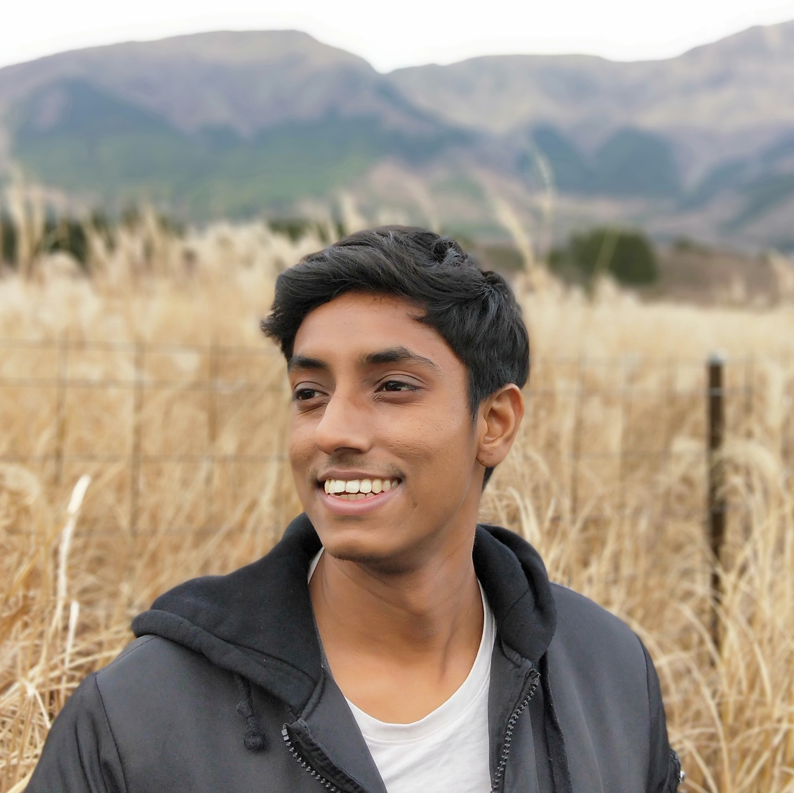

Explore my research, publications, and more.
I am a postdoctoral fellow with the Harvard Machine Learning Foundations Group,
developing reinforcement learning agents to understand representational learning in biological and artificial systems. I am advised by
Cengiz Pehlevan,
Demba Ba, and
Lucas Janson.
Previously, I was a research scientist at the Centre for Frontier AI Research (CFAR), A*STAR, developing
vision-language reasoning datasets and models. I was advised by
Cheston Tan.
I completed my Ph.D. in Computational Neuroscience at the National University of Singapore (NUS)
under the Integrative Sciences and Engineering Programme (ISEP).
My doctoral thesis was to develop a biologically plausible reinforcement learning agent that learned
new paired associations after a single example.
I was co-advised by Andrew Tan and
Shih-Cheng Yen and collaborated with
Camilo Libedinsky.
I completed my B.Sc in Life Sciences in 2017, University Scholars Programme (USP) and Special Programme in Science (SPS) at the National University of Singapore.
My Honors project was to improve Brain-Computer Interfaces to control wheelchairs using either human EEG or macaque intracortical spike data.
We learn models of the world, enabling us to solve new problems quickly.
How do neural circuits and algorithms learn these models, and how do we decide the next best action?
It has also been proposed that distortions to these internal models and learning algorithms contribute to neurological disorders.
Can we develop mathematical models to understand these phenomena?
Can we improve existing artificial systems and devise tools to alleviate disorders?
To explore these questions, I develop artificially intelligent agents, grounded to theory and experiments,
to understand learning computations for intelligence, and when it might fail.
Based on these insights, I hope to improve existing artificial systems, and develop technologies that can improve learning outcomes and alleviate learning disabilities.
Kumar, M. G., Bordelon, B. Zavatone-Veth, J. A., Pehlevan, C. (2024). bioRxiv 2024.12.12.627755 [Link] [GitHub]
Cloos, N., Kumar, M. G., Manoogian, A. Cueva, C. J. Rhoads, S. A. (2024). NeurIPS workshops 2024 [Short Paper]
Lin, Z.*, Azaman, H.*, Kumar, M. G., Tan, C. (2024). Computer Vision and Pattern Recognition (CVPR) workshops 2024 [Link] [GitHub] [Poster]
Kumar, M. G., Ayyadhury, S., Murugan, E. (2024). In: Parthasarathy, K., Manikkam, R. (eds) Translational Research in Biomedical Sciences: Recent Progress and Future Prospects. Springer, Singapore. [Link]
Lee, C.*, Kumar, M. G.*, Tan, C. (2023). International Conference on Computer Vision (ICCV) 2023 [Link] [GitHub] [Poster]
Kumar, M. G., Tan, C., Libedinsky, C., Yen, S. C., & Tan, A. Y. Y. (2023). arXiv preprint arXiv:2106.03580. [Link] [GitHub] [Poster]
Kumar, M. G., Tan, C., Libedinsky, C., Yen, S. C., & Tan, A. Y. Y. (2022). Cerebral Cortex. [Link] [GitHub]
Kumar M. G., Kai Keng Ang, Rosa Q. So. (2017). In Engineering in Medicine and Biology Society, EMBC 2017. 39th Annual International Conference of the IEEE. [Link]
Besides research, I co-founded Nugen.ai, which hopes to characterize affective states during learning to aid parents and teachers in personalizing education. I also love to tour either on my motorcycle or backpacking, and be involved in the arts scene.